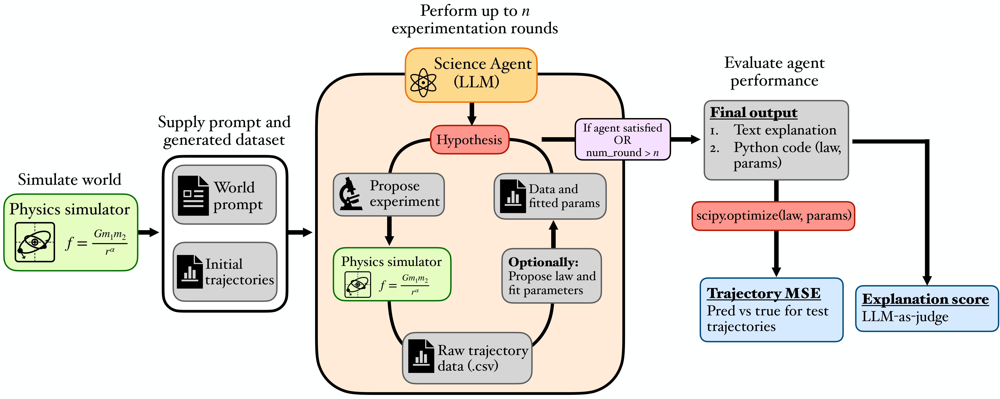

Abstract

Frontier LLMs perform strongly across physics evaluations, but it is hard to disentangle genuine reasoning from recall of established science. DiscoverPhysics asks an LLM agent to discover the laws of motion of a simulated world whose physics deliberately deviates from our own.
We construct eleven worlds governed by, among others, screened and fractional-power gravity, multi-species couplings, hidden dark-matter-like particles, and time-varying interactions. Each world is generated on demand by an N-body simulator. The agent proposes several rounds of experiments, observes raw trajectory data, and submits both a natural-language explanation and a Python implementation of the inferred law.
Across ten frontier models, the strongest agents pass only about half of the worlds and consistently fail on those where latent structure must be uncovered. Predictive accuracy and conceptual understanding decouple: the model with the lowest trajectory MSE is not the one with the highest explanation score.
Leaderboard
A world is considered a pass if per-trajectory normalized MSE is below 0.1 and the explanation score is ≥ 0.75. Pass@k is computed by sampling k seeds per world and counting worlds with at least one passing attempt, averaged over 1,000 resamples. Standard errors are bootstrapped from 5 seeds.
Results at a glance


The eleven worlds
Each world is defined by a hidden force law. Agents see only the simulator output; world names and equations below are revealed in the paper, never to the agent.
Submit a model
We're opening DiscoverPhysics to community submissions. To add your model to the
leaderboard, run our evaluation harness, generate a JSON entry matching the
result.schema.json shape, and open a pull request adding it under
data/results.json. A CI check validates the schema; a maintainer reviews
and merges.
If you'd like to discuss a non-standard evaluation setting (different round budgets, new world, custom prompt), open an issue first.
Submission guide View schema